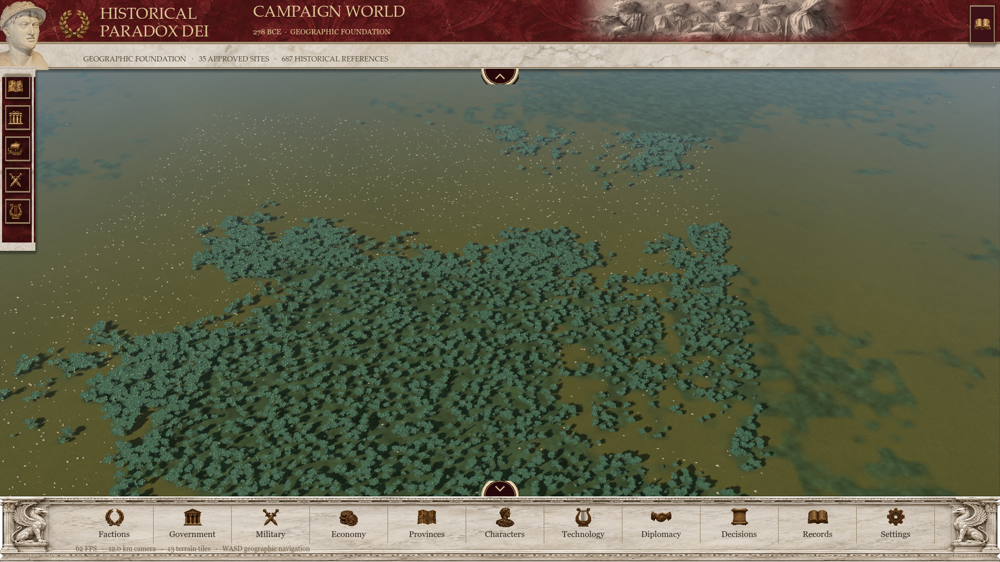
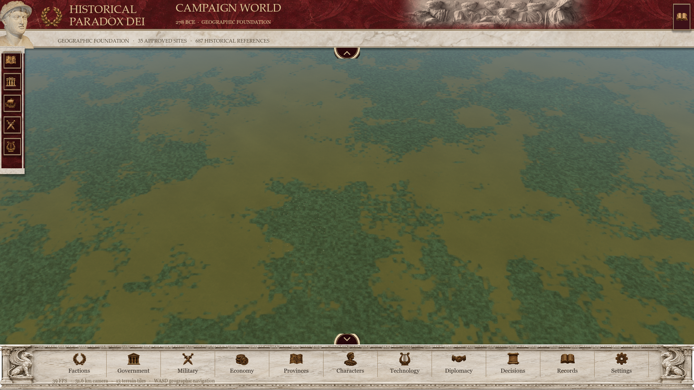
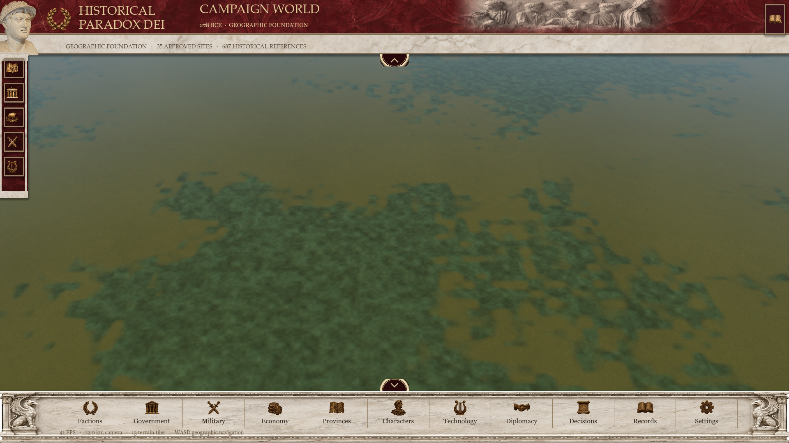
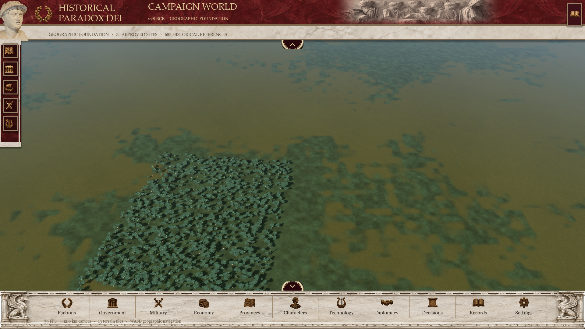
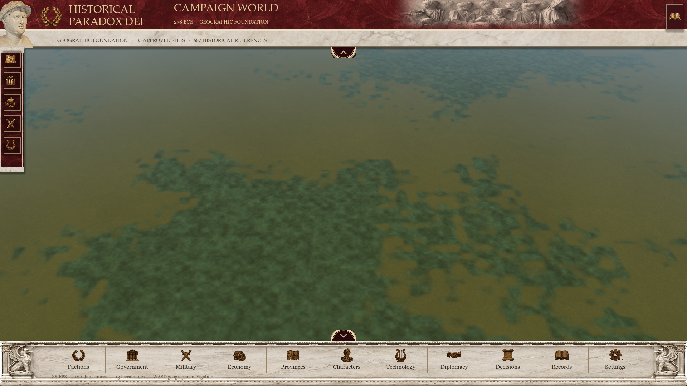
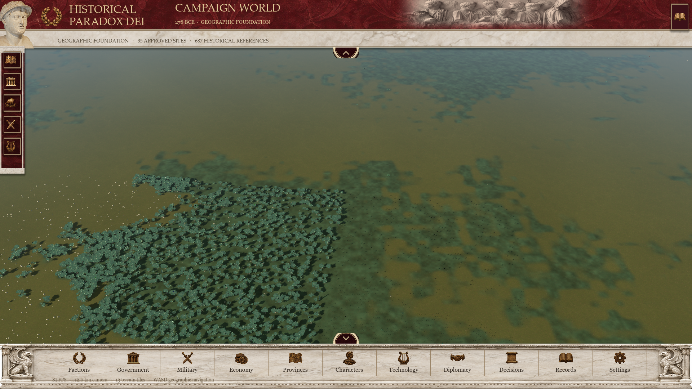
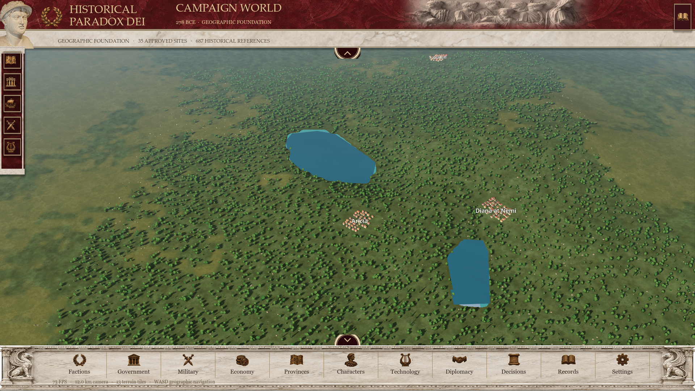

gaul: post-local-ready cold view


Godot 4.7.2 · RTX 3060 Laptop · 1920×1080. Empty placement-cache cold tests; OS/driver caches retained. These screenshots show rendering after local upload, not a recording of the transition; other coarse cells may still be preparing. Timing evidence is in the native JSON profiles. All local placement buffers match byte for byte.
| Trial | First central detail delay (ms) | All nine cells ready delay (ms) |
|---|---|---|
| italy / cold | 4204 → 1470 | 20295 → 16886 |
| italy / warm-reentry | 0 → 0 | 0 → 0 |
| gaul / cold | 28656 → 0 | 51666 → 25661 |
| gaul / warm-reentry | 0 → 0 | 0 → 0 |
PNG capture pauses rendering. Actual elapsed time is shown; these pictures are qualitative evidence, separate from benchmark timing.






